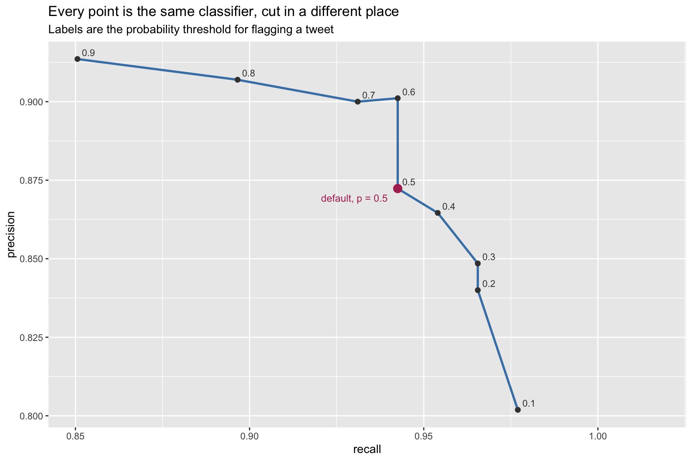
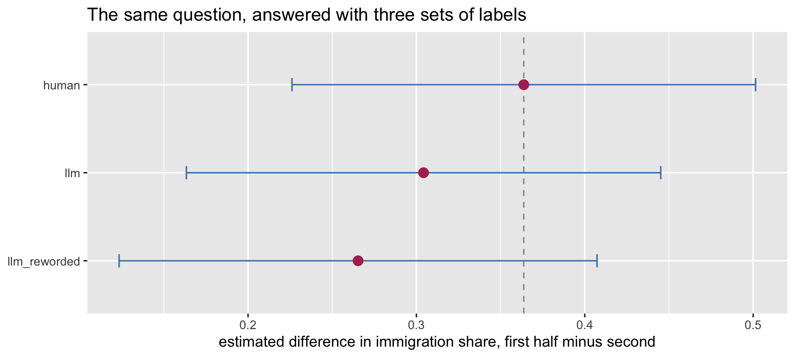

install.packages(c("tm", "SnowballC", "caret", "e1071", "ggplot2"))6 Evaluating AI Systems
Week 6, 7 October
Last week a language model was asked to sort 181 tweets into two categories, having been shown no labeled examples whatever, and it agreed with the human coder on 95 percent of them. The Naive Bayes classifier built in Week 4, trained on 724 hand-coded tweets, managed roughly 90 percent on the same held-out cases. If those two numbers are the whole story, then Week 4 was a waste of an afternoon, and the sensible advice to anybody studying political text is to write a paragraph of English and stop there.
Both numbers are accurate. However, the conclusion does not follow from them, and the gap between what the figures say and what they license is the subject of this session.
Two reasons are developed below, and they operate at different levels. The first concerns what an accuracy figure is a statement about, which turns out to be agreement with one coder’s application of one codebook rather than correspondence with the world. The second is more specific and, for anybody intending to use these labels in a project, considerably more alarming: labels that are 95 percent correct do not yield estimates that are 95 percent correct, and the error that survives is not noise but bias.
6.1 Part I. What accuracy hides
6.1.1 The classifier, rebuilt
Everything in this part runs on the Week 4 pipeline, compressed and otherwise unchanged. Nothing in the chunk below is new, and the commentary on any line of it is in last week but one.
library(tm)
library(SnowballC)
library(caret)
library(ggplot2)
url4 <- paste0("https://raw.githubusercontent.com/babakrezaee/",
"AppliedAI-PoliSci/refs/heads/main/data/",
"trump_immigration_2019.csv")
tweets <- read.csv(url4, stringsAsFactors = FALSE)
tweets$label <- factor(tweets$label, levels = c("other", "immigration"))
corpus <- VCorpus(VectorSource(tweets$text))
replace_with_space <- content_transformer(function(x, pattern) {
gsub(pattern, " ", x)
})
clean <- tm_map(corpus, content_transformer(tolower))
clean <- tm_map(clean, replace_with_space, "http[s]?://\\S*")
clean <- tm_map(clean, replace_with_space, "@\\S+")
clean <- tm_map(clean, replace_with_space, "[^a-z ]")
clean <- tm_map(clean, removeWords, stopwords("english"))
clean <- tm_map(clean, stemDocument)
clean <- tm_map(clean, stripWhitespace)
dtm <- DocumentTermMatrix(clean)
train_id <- 1:floor(0.8 * nrow(tweets))
freq_words <- findFreqTerms(dtm[train_id, ], 5)
counts_train <- as.matrix(dtm[train_id, freq_words])
counts_test <- as.matrix(dtm[-train_id, freq_words])
y_train <- tweets$label[train_id]
y_test <- tweets$label[-train_id]
p_immigration <- (colSums(counts_train[y_train == "immigration", ]) + 1) /
sum(colSums(counts_train[y_train == "immigration", ]) + 1)
p_other <- (colSums(counts_train[y_train == "other", ]) + 1) /
sum(colSums(counts_train[y_train == "other", ]) + 1)
margin <- as.vector(counts_test %*% log(p_immigration)) +
log(mean(y_train == "immigration")) -
as.vector(counts_test %*% log(p_other)) -
log(mean(y_train == "other"))
# Turn the score difference into a probability that the tweet is about
# immigration. This is the quantity the threshold is applied to.
prob <- 1 / (1 + exp(-margin))
nb_pred <- factor(ifelse(prob > 0.5, "immigration", "other"),
levels = c("other", "immigration"))Two lines there need explaining, because the whole of this part depends on them.
margin is the difference between the two scores Week 4 computed separately, and the size of that difference records how lopsided the classifier’s judgment is. It is not on any scale a reader can interpret, since it is a sum of logarithms whose units mean nothing outside the model. The next line therefore converts it into something that does mean something: \(P(\text{immigration} \mid \text{tweet})\), the probability the classifier assigns to a tweet being about immigration. The conversion is the familiar logistic transformation, and it is monotone, so it reorders nothing.
The classifier’s default is to flag a tweet when that probability exceeds 0.5, which is simply the rule that a tweet goes to whichever class the model thinks more likely. Comparing the probability against 0.5 and comparing the margin against zero are the same comparison written twice. That cut point, rather than anything in the classifier itself, is what we are about to interrogate.
6.1.2 Precision and recall, at last
Twice now, in the Week 2 and Week 4 assignments, two numbers have been deferred with a promise that they belong here. Both describe the same confusion matrix from different directions, and both are computed with respect to a positive class that the researcher nominates.
cm <- confusionMatrix(nb_pred, y_test, positive = "immigration")
cm$table Reference
Prediction other immigration
other 82 5
immigration 12 82round(cm$byClass[c("Precision", "Recall", "F1")], 3)Precision Recall F1
0.872 0.943 0.906 Recall, also reported as sensitivity, answers a question about the cases that genuinely are positive: of the tweets that really concern immigration, what proportion did the classifier find? Precision, reported by caret as positive predictive value, answers a question about the cases the classifier flagged: of the tweets it called immigration, what proportion really were? The first is a statement about coverage, the second about trustworthiness, and a classifier can be excellent at one while being poor at the other.
Neither, however, is a property the classifier possesses on its own: both are properties of the classifier taken together with a decision about where the line is drawn, and the next section makes that dependence visible.
6.1.3 The threshold is a choice, not a finding
Flagging a tweet when the probability passes 0.5 is a convention rather than a result. Any other cut point produces a different classifier from the same fitted model, and nothing in the data says that one half is the right place to stand.
cuts <- seq(0.1, 0.9, by = 0.1)
sweep_out <- data.frame()
for (cc in cuts) {
pred_c <- factor(ifelse(prob > cc, "immigration", "other"),
levels = c("other", "immigration"))
tp <- sum(pred_c == "immigration" & y_test == "immigration")
fp <- sum(pred_c == "immigration" & y_test == "other")
fn <- sum(pred_c == "other" & y_test == "immigration")
tn <- sum(pred_c == "other" & y_test == "other")
sweep_out <- rbind(sweep_out,
data.frame(threshold = cc,
flagged = tp + fp,
precision = tp / (tp + fp),
recall = tp / (tp + fn),
accuracy = (tp + tn) / length(y_test)))
}
sweep_out$default <- sweep_out$threshold == 0.5
round(sweep_out[, 1:5], 3) threshold flagged precision recall accuracy
1 0.1 106 0.802 0.977 0.873
2 0.2 100 0.840 0.966 0.895
3 0.3 99 0.848 0.966 0.901
4 0.4 96 0.865 0.954 0.906
5 0.5 94 0.872 0.943 0.906
6 0.6 91 0.901 0.943 0.923
7 0.7 90 0.900 0.931 0.917
8 0.8 86 0.907 0.897 0.906
9 0.9 81 0.914 0.851 0.890Read that table one row at a time, because each row is a complete confusion matrix compressed into three numbers. At a threshold of 0.1 the classifier flags a tweet on the slightest suspicion, so it finds nearly every immigration tweet and buys that coverage with false alarms. At 0.9 it flags only what it is nearly certain about, and the tweets it flags are nearly all correct, while a good many genuine ones are let through. The row marked 0.5 is the default, and it is one row among nine rather than the answer.
ggplot(sweep_out, aes(recall, precision)) +
geom_path(colour = "steelblue", linewidth = 1) +
geom_point(colour = "grey25", size = 1.9) +
geom_text(aes(label = threshold), size = 3.1, colour = "grey25",
hjust = -0.35, vjust = -0.5) +
geom_point(data = sweep_out[sweep_out$default, ],
colour = "maroon", size = 3.4) +
geom_text(data = sweep_out[sweep_out$default, ],
label = "default, p = 0.5", colour = "maroon",
size = 3.3, hjust = 1.15, vjust = 1.8) +
expand_limits(x = max(sweep_out$recall) + 0.04) +
labs(x = "recall", y = "precision",
title = "Every point is the same classifier, cut in a different place",
subtitle = "Labels are the probability threshold for flagging a tweet")
The curve falls from left to right, which is the trade-off drawn rather than described, and the labels say what it costs to move along it. The maroon point is not privileged. It is simply where a convention happens to put us, and its neighbors show what a different convention would have bought.
Which point on that curve is the right one is not a question the data can answer. If the labels are going to be counted, for instance to estimate what share of a year’s output concerned immigration, then false alarms inflate the count directly and precision is the quantity to protect. If the labels are going to retrieve a set of documents for a person to read, missing cases is the costly error and recall matters more, since a false alarm costs only reading time. The choice is made by the purpose, and reporting the accuracy without reporting the purpose conceals it.
6.1.4 A warning about those probabilities
The thresholds above are interpretable, and the probabilities they are applied to are a good deal less trustworthy than they look.
round(table(cut(prob, c(0, 0.01, 0.1, 0.5, 0.9, 0.99, 1))) / length(prob), 3)
(0,0.01] (0.01,0.1] (0.1,0.5] (0.5,0.9] (0.9,0.99] (0.99,1]
0.337 0.077 0.066 0.072 0.116 0.331 Most tweets sit at one end or the other, with the classifier reporting near-certainty in both directions. That is why moving the threshold from 0.1 to 0.9 changes the label of fewer tweets than you might expect: most of them were never close to the line.
The cause is the independence assumption from Week 4. A tweet containing border, southern, wall, and patrol supplies four pieces of evidence that the model treats as independent when they are closer to one piece stated four times, so the evidence is multiplied rather than discounted and the probability is driven to an extreme. The ordering of the tweets is still informative, which is why the sweep works at all. The numbers themselves should not be read as the model’s honest degree of belief.
Note
Calibration is a third property, distinct from both of these: whether a model that says seventy percent is right about seventy percent of the time. It is the central question for anything used as an early warning system, so it belongs with next week’s material on crisis management rather than here.
6.2 Part II. Validating a language model
Week 5 ended with an admission. A language model had classified a corpus, the output had the right shape, and nothing in that session established whether any of it was correct, because the NATO tweets carried no labels to check against. The instrument required was the one Week 4 built, and it is applied here.
Two systems are now in play, so the naming below is fixed and used consistently. The classifier is the Naive Bayes model of Week 4, trained on 724 hand-coded tweets. The model, or the language model, is the one from last week, which was trained on nothing of ours and told what to do in a paragraph of English.
url6 <- paste0("https://raw.githubusercontent.com/babakrezaee/",
"AppliedAI-PoliSci/refs/heads/main/data/",
"llm_labels_w6.csv")
llm <- read.csv(url6, stringsAsFactors = FALSE)
str(llm)'data.frame': 181 obs. of 7 variables:
$ id : num 1.12e+18 1.12e+18 1.11e+18 1.17e+18 1.16e+18 ...
$ date : chr "2019-05-04 21:49" "2019-04-23 23:47" "2019-03-14 22:46" "2019-09-17 11:38" ...
$ text : chr "Very good call yesterday with President Putin of Russia. Tremendous potential for a good/great relationship wit"| __truncated__ "Great interview by Jared. Nice to have extraordinarily smart people serving our Country! https://t.co/d6Tgrn4Tzn" "A vote for today’s resolution by Republican Senators is a vote for Nancy Pelosi, Crime, and the Open Border Democrats!" "Beautiful evening in New Mexico with Great American Patriots! https://t.co/S8eDG3dAq0" ...
$ human : chr "other" "other" "immigration" "other" ...
$ llm_main : chr "other" "other" "immigration" "other" ...
$ llm_reword: chr "other" "other" "immigration" "other" ...
$ llm_model2: chr "other" "other" "immigration" "other" ...all(llm$id == tweets$id[-train_id])[1] FALSEThat last line is not ceremony. The file holds the same 181 tweets in the same order as the Week 4 test set, and if it ever stops doing so, every number below becomes meaningless without becoming visibly wrong. Check alignment whenever you compare two sources of labels for the same cases.
6.2.1 What is in the file, and where it came from
The file carries four labels for every tweet, and the rest of this part is built on the differences between them, so it is worth being precise about what each one is.
| Column | What produced it |
|---|---|
human |
The Week 4 hand coding, one person working from a written codebook |
llm_main |
A language model, given the prompt below, called prompt A |
llm_reword |
The same model on the same tweets, given a differently worded prompt saying the same thing, called prompt B |
llm_model2 |
A second, larger model from the same provider, given prompt A again |
So two things vary, and only one at a time. Comparing llm_main against llm_reword holds the model fixed and changes the wording. Comparing llm_main against llm_model2 holds the wording fixed and changes the model. The exact model names and the date of the run are recorded in data/llm_labels_w6_README.md, since a measurement of this kind is meaningless without them.
Both prompts were written to do the same job, and neither is a straw man.
Prompt A, which produced llm_main and llm_model2:
You are coding tweets for a political science project.
Decide whether immigration is a main subject of the tweet. This includes the southern border, the border wall, illegal immigration, deportation, ICE, sanctuary cities, asylum, visas, and DACA.
If immigration is mentioned only in passing within a longer list of topics, code it as other.
Prompt B, which produced llm_reword:
Classify each tweet by topic.
Answer immigration if the tweet concerns immigration or border policy in any substantial way. Answer other for everything else.
Read them side by side before going on, because the comparison later depends on your judgment that these are two reasonable attempts at one instruction rather than a good prompt and a bad one. Prompt A is longer, gives examples, and states the rule about passing mentions. Prompt B is shorter and leaves “substantial” to the model. Either is the sort of thing a researcher writes first, and neither contains an error.
The script that produced the file is in the repository at R/w6_generate_llm_labels.R, and the provenance, including what is and is not reproducible about it, is in data/llm_labels_w6_README.md. Read both before the session. The session concerns evaluation, and a measurement whose origin is undocumented cannot be evaluated at all.
6.2.2 Three label sources, one set of tweets
human <- factor(llm$human, levels = c("other", "immigration"))
llm_main <- factor(llm$llm_main, levels = c("other", "immigration"))
confusionMatrix(nb_pred, human, positive = "immigration")$table Reference
Prediction other immigration
other 82 5
immigration 12 82confusionMatrix(llm_main, human, positive = "immigration")$table Reference
Prediction other immigration
other 87 2
immigration 7 85round(rbind(
naive_bayes = confusionMatrix(nb_pred, human,
positive = "immigration")$byClass[c("Precision", "Recall")],
llm = confusionMatrix(llm_main, human,
positive = "immigration")$byClass[c("Precision", "Recall")]
), 3) Precision Recall
naive_bayes 0.872 0.943
llm 0.924 0.977The language model outperforms the classifier, and it does so having been shown no training data at all. The result is real and should be taken seriously, since it is close to what the published literature reports.
However, the shape of the model’s errors tells us more than the headline figure does. Recall is much higher than precision, which means the model rarely misses an immigration tweet and fairly regularly flags one the coder did not. Rather than theorize about why, we can read the mistakes.
wrong <- llm[llm$human != llm$llm_main, c("text", "human", "llm_main")]
nrow(wrong)[1] 9false_alarms <- wrong[wrong$human == "other", ]
for (i in 1:nrow(false_alarms)) {
cat("-", substr(false_alarms$text[i], 1, 190), "\n\n")
}- ....Kevin is strong on Securing the Border, #USMCA, protecting our #2A, and Loves our Vets and Military. Kevin is a true friend, and has my Complete and Total Endorsement!
- MISSISSIPPI! There is a VERY important election for Governor on November 5th. I need you to get out and VOTE for our Great Republican nominee, @TateReeves. Tate is Strong on Crime, tough on
- Senator Cindy Hyde-Smith is doing a GREAT JOB for the people of Mississippi and fully supports our #MAGA Agenda. Cindy is tough on Crime, Strong on the Border and Illegal Immigration....
- I will be signing our 738 Billion Dollar Defense Spending Bill today. It will include 12 weeks Paid Parental Leave, gives our troops a raise, importantly creates the SPACE FORCE, SOUTHERN B
- ..that this Administration has done. They don’t talk about the great economy, the big tax and regulation cuts, the rebuilding of the Military, “Choice” at our VA, our Vets, Judges and Suprem
- Looking forward to being in the North Carolina tomorrow night. We’re having a BIG RALLY for a great guy, Dan Bishop. Strong on Crime, Borders, your Military and our Vets, we need Dan Bishop
- I will be interviewed by Jeanine Pirro at 9:00 P.M. on @FoxNews. Watch @JesseBWatters before and @greggutfeld after. All terrific people. I am in the White House waiting for Cryin’ Chuck and Six of these seven are the same kind of tweet. They are campaign endorsements and lists of accomplishments, in which the border appears as one item in a series: strong on crime, strong on the border, protects the Second Amendment, loves our veterans. The defense spending bill tweet is the purest case, since “SOUTHERN BORDER WALL FUNDING” sits in a list alongside parental leave, a troop pay raise, the Space Force, and the smoking age.
Now recall where those tweets got their labels. The Week 4 codebook has a rule for exactly this situation: a passing mention inside a longer list is coded other. A second rule covers endorsement boilerplate, on the grounds that the border in such a tweet occupies one slot in a formula rather than serving as its subject. Those rules were written by one person, in an afternoon, to resolve cases the original scheme had not anticipated.
So the model is not misreading English. It is reading these tweets much as you or I would, noticing that immigration is mentioned, and failing to apply a convention that a human coder invented and wrote down somewhere the model never saw. Its errors concentrate almost entirely on the cases where the codebook had to make a judgment call.
missed <- wrong[wrong$human == "immigration", ]
for (i in 1:nrow(missed)) {
cat("-", substr(missed$text[i], 1, 190), "\n\n")
}- So now the Obama appointed judge on the Census case (Are you a Citizen of the United States?) won’t let the Justice Department use the lawyers that it wants to use. Could this be a first?
- ....This will supersede USMCA. Likewise I am looking at an economic penalty for the 500 Billion Dollars in illegal DRUGS that are shipped and smuggled through Mexico and across our Southern The two it missed point the same way. One concerns the census citizenship question, which the codebook counts as immigration and which a reasonable person might not. The other is about drugs smuggled across the southern border, where the codebook says that drugs count only when the tweet ties them to immigrants or the border, and this tweet arguably does. Neither is a stupid mistake, and both are disagreements about a rule rather than about the tweet.
Keep this in mind for Part III, because it is the hinge of the whole session. Our 95 percent is not a measure of how well the model understands immigration. It is a measure of how often it happens to apply the same conventions as one coder, and the five percent where it fails is made almost entirely of the places where those conventions were contestable.
6.2.3 Check one, does the claim survive checking
The syllabus names three reliability checks, and the first applies whenever a model asserts something that could in principle be looked up. Ask it for a source, then verify that the source exists and says what the model says it says.
Nothing in the file above bears on this, since it is not a classification problem, which makes it a workshop exercise rather than a chunk here. Use something you can actually check, and Fearon and Laitin’s 2003 article serves well, since it is on the Week 3 reading list and already in your possession:
Ask the model what Fearon and Laitin found about the relationship between ethnic diversity and civil war onset, and then ask it for the page on which they report it. Open the article and look.
Then do the same with an article you know well from another course, and then with one you have only heard of. The third is the interesting case, because it is the one where you would have believed the answer.
What you are looking for is not an error of the ordinary kind. It is a reference with a plausible author, a plausible journal, a plausible year, and a page number, for an article that does not exist, or a real article that says something else. The output gives you nothing to go on, since a fabricated citation is written in exactly the same confident register as a correct one.
This matters beyond the parlor trick. In Part II we treated the model’s labels as data, and the only reason we could trust them at all is that we had 181 human judgments to check them against. The moment a model asserts something you cannot check, you are relying on fluency as a proxy for accuracy, and these are separate properties of a text. Only one of them is visible without leaving the page.
6.2.4 Check two, does the answer survive a reworded prompt
llm_reword <- factor(llm$llm_reword, levels = c("other", "immigration"))
table(as_written = llm_main, reworded = llm_reword) reworded
as_written other immigration
other 82 7
immigration 0 92round(mean(llm_main == llm_reword), 3)[1] 0.961Prompt A and prompt B are both defensible, as you saw above, and the model is identical in the two runs. The only thing that changed between them is the wording of the instruction. Yet a share of the corpus is labeled differently depending on which was used, and the identity of those tweets is more instructive than their number.
moved <- llm[llm$llm_main != llm$llm_reword, ]
for (i in 1:nrow(moved)) {
cat("-", substr(moved$text[i], 1, 170), "\n\n")
}- ....energy independence, manufacturing resilience, illegal immigration coming down, the Wall going up, China confronted, the caliphate defeated, NAFTA renegotiated, our m
- So now the Obama appointed judge on the Census case (Are you a Citizen of the United States?) won’t let the Justice Department use the lawyers that it wants to use. Coul
- ....This will supersede USMCA. Likewise I am looking at an economic penalty for the 500 Billion Dollars in illegal DRUGS that are shipped and smuggled through Mexico and
- All necessary work has been completed to declare Mexican Cartels terrorist organizations. Statutorily we are ready to do so. However, at the request of a man who I like a
- “Poll shows Dems losing interest in Impeachment inquiry all across the board. These Polls are actually devastating to the Democrats. But the writing was on the wall. He’s
- It was a very bad week for the Democrats, with the GREAT economic numbers, The Virginia disaster and the State of the Union address. Now, with the terrible offers being m
- The White House will be hosting a very big and very important Social Media Summit today. Would I have become President without Social Media? Yes (probably)! At its conclu These are the same families of tweet as the errors above. There is the long list of accomplishments with “illegal immigration coming down” buried in it, the census citizenship question again, the drug smuggling tweet again, and a poll quotation that mentions building the wall in passing. The tweets that move when the prompt moves are the tweets that were ambiguous under the codebook in the first place.
That is reassuring and alarming in about equal measure. Reassuring, because the instability is not arbitrary and the model is not flailing: it is unstable exactly where a careful human coder had to stop and make a decision. Alarming, because those borderline cases are frequently the substantively interesting ones, and because a researcher who ran only one prompt would never learn that an eighth of the ambiguous cases could have gone the other way.
Set that share against the error rate from the previous section. The model disagrees with the human coder on about five percent of tweets, and it disagrees with itself under rewording on about four percent. The instability introduced by a reasonable change of wording is therefore nearly as large as the measured error, which means that a paper reporting the accuracy of such a classifier without reporting its sensitivity to the prompt has reported roughly half of what the reader needs.
6.2.5 Check three, does a second model agree
Here the wording is held fixed and the model changes. Both runs use prompt A, and the second model is a larger one from the same provider, so this asks whether the measurement survives a change of instrument.
llm_model2 <- factor(llm$llm_model2, levels = c("other", "immigration"))
table(prompt_A_model_1 = llm_main, prompt_A_model_2 = llm_model2) prompt_A_model_2
prompt_A_model_1 other immigration
other 83 6
immigration 1 91round(mean(llm_main == llm_model2), 3)[1] 0.961Note what this check cannot do. The two models come from one company, trained in broadly similar ways on broadly similar text, so they are closer to two measurements with the same instrument than to two independent instruments. Agreement between them is therefore a weaker form of evidence than agreement between, say, two coders trained separately, and the next section says why that matters.
6.2.6 Agreement is not accuracy
Three numbers have now been produced, and the temptation is to read them as three measurements of the same thing. They are not, and the distinction is the most important idea in this part.
Agreement between two prompts, or between two models, establishes that a measurement is reproducible. It says that the number would come out much the same if somebody else ran it, which is a real property and not a trivial one. However, it says nothing whatever about whether the number is right. Two models trained on overlapping corpora, with overlapping assumptions about what the word “border” implies, may agree with one another precisely because they share a bias, and their agreement would then be evidence of a common error rather than of a correct answer.
Only the human labels speak to accuracy. Thus the comparison that matters is the first one, against human, and the reliability checks are supporting evidence rather than substitutes.
That said, the human labels are themselves a measurement rather than the truth. They were produced by one coder applying one written codebook, and the Week 4 documentation records the four rules invented to resolve cases the scheme did not anticipate. A second coder would place some tweets differently. The honest statement of the result is therefore not that the model is 95 percent accurate, but that it agrees 95 percent of the time with one person’s application of one coding scheme to 181 tweets. Every further claim rests on that sentence, and it is a good deal weaker than the number alone suggests. On the practice of treating human judgment as the benchmark, and on what that requires, see Lowe and Benoit (Lowe and Benoit 2013).
6.3 Part III. Why a good score can be the wrong number
6.3.1 What the score is a score of
Political scientists have a word for the problem this section is about, and it is one of the few places in this course where the discipline is ahead of computer science rather than behind it. Construct validity asks whether an instrument measures the concept it claims to measure, as distinct from measuring something adjacent, something correlated, or something merely convenient.
The number in Part II is an agreement rate against a codebook. Whether it is also a measure of the aboutness of immigration depends entirely on whether the codebook captured that concept, and that codebook was the work of a single coder resolving awkward cases as they arose. Rule one of it, which sends a tweet listing ten accomplishments with “Border” seventh into the other category, is a judgment call that a different coder could defensibly reverse. Reverse it, and the labels change, and the model’s accuracy against the new labels changes, and nothing about the model or the tweets has moved at all.
Four questions bear on any evaluation, and they are not one question asked four times. Each one can be put to our own classifier.
Does the measure cover the concept, or only part of it? Our scheme counts a tweet about the census citizenship question as immigration and a tweet endorsing a candidate who is “strong on the border” as not. A reader who thinks immigration politics is substantially about how politicians signal toughness on it would say we have measured the policy debate and discarded the political performance, which for many research questions is the half that matters.
Does it agree with an established measure of the same thing? The Comparative Agendas Project and the Manifesto Project have both coded political text for immigration content for years, using schemes refined over decades by multiple coders. Ours was the work of one person over a few hours. We never checked our labels against either, and we could have.
Does the measure behave as the concept should behave? Here we do reasonably well. The immigration share falls sharply after the first half of 2019, which is what anybody following the shutdown and then impeachment would expect, and a measure that showed no such movement would be suspect regardless of its agreement rate.
What follows from using it? Suppose this classifier were not a teaching exercise but a monitoring system, and suppose politicians learned which words triggered it. The endorsement tweets in Part II show that the border can be invoked while saying nothing about it, and a measure deployed at scale eventually changes the behavior of whoever is being measured.
An evaluation that answers only the question “how often does it agree with my labels” has addressed the first of these badly and the other three not at all.
6.3.2 Contamination and leakage
A score can also be too high for a reason that has nothing to do with the concept, namely that the test was not really a test.
For your own pipelines the problem is leakage, and it has appeared twice already in this course. Week 2 met it as rescaling before splitting, which lets the test set influence the training set, and Week 4 met it again, more quietly, as selecting the vocabulary from the full corpus. Rather than describe it a third time, here it is.
freq_leaky <- findFreqTerms(dtm, 5) # chosen from ALL 905 tweets
length(freq_words) # training tweets only[1] 651length(freq_leaky) # the leaky version[1] 749head(setdiff(freq_leaky, freq_words), 20) [1] "account" "addit" "address" "amaz" "appoint"
[6] "apprentic" "assist" "associ" "benefit" "biden"
[11] "bishop" "black" "bless" "brought" "captur"
[16] "center" "condit" "congression" "consider" "convers" Those words are in the classifier’s vocabulary only because the test tweets were counted when the vocabulary was chosen. They passed the frequency threshold with help from documents the classifier is about to be graded on, and every one of them is now a feature it can use. The classifier has been told something about its own exam.
The second form of leakage is easier to commit and easier to see, and we have already committed it. Part I swept the threshold from 0.1 to 0.9 and reported precision and recall at each value, every one of them computed on the test set. Suppose we had used that table to choose.
best <- sweep_out[which.max(sweep_out$accuracy), ]
round(c(at_the_default = sweep_out$accuracy[sweep_out$default],
best_on_test = best$accuracy), 3)at_the_default best_on_test
0.906 0.923 best$threshold[1] 0.6The threshold that maximizes accuracy on these 181 tweets is not 0.5, and the accuracy it delivers is the higher of the two numbers. That gap is the amount by which choosing a parameter on the test set flatters the result, and it was obtained by looking at the answers. (If the two numbers happen to come out equal, we were lucky rather than careful, and the argument is unchanged.)
Reporting the better figure as an out-of-sample result would be straightforwardly false. Yet the code that produces it looks exactly like the code that produces an honest number, and there is no error message, no warning, and no trace in the output.
This is the general shape of the problem. Leakage does not announce itself as a bug. It announces itself as a better result.
For a commercial language model the same problem returns in a form you can neither fix nor inspect. Contamination is the possibility that the documents you are using as a test set were part of the model’s training data, and with a training corpus that is undisclosed, the correct position is that you do not know.
Consider our own case rather than a hypothetical one. These are tweets by a sitting president, quoted in thousands of news articles, analyzed in academic papers, and archived in at least three public GitHub repositories, including the one this corpus was built from. If any text on the internet was in that training data, this text was. The model may therefore have encountered these exact tweets, along with contemporaneous commentary explaining what they were about, which is a good deal more than we gave it in the prompt.
We cannot check this and neither can anyone outside the company. That is not a reason to abandon the method, however, but a reason to state the limitation plainly rather than to report 95 percent as though it were a clean out-of-sample result. Note also what it does to the comparison in Part II: Naive Bayes saw 724 tweets and nothing else, so the contest was never quite as fair as the table made it look.
6.3.3 What a benchmark number means
Published evaluations of these systems are mostly benchmark scores, and three pathologies recur often enough to be recognizable. Two of them we have already committed in this handout, which is the quickest way to understand them.
Benchmarks saturate. Once a test is widely used, systems are built and selected against it until the leading ones all score within a point or two of each other and of the ceiling, at which stage the test has stopped ranking the systems and started ranking the noise. The remedy is a harder test, so the cycle runs again, and the published scores across a few years of such cycles are not comparable with one another.
Benchmarks are gamed, though rarely by fraud. The ordinary mechanism is the one from the previous section: we swept a threshold across our test set and could have reported the best value we found. Nobody lied, no rule was broken, and the reported figure would still have described our test set rather than the world. Scale that up to an industry in which benchmark position determines funding and procurement, and the pressure runs the same way without anybody deciding that it should.
And a growing share of evaluation now uses one language model to judge the output of another, since human raters are slow and expensive. This is efficient and it is circular, for the reason Part II gave: a judge trained on much the same text as the system it grades will share its assumptions about what a good answer looks like, so agreement between them is weak evidence of quality. We saw the small version of this when two models agreed with each other more readily than either agreed with the coder.
The practical conclusion is narrow, and it is the one thing from this section to carry out of the room. When a procurement document, a vendor, or a paper reports that a system is 94 percent accurate, the figure is a claim about performance on some benchmark, and the questions that matter are which one, constructed by whom, measured when, and against whose labels. None of those is a technical question, and a political scientist is as well placed to ask them as anybody.
6.4 Part IV. When the measurement feeds a regression
Everything so far has treated the labels as the end product. In a research project, however, they are rarely the end product: they are a variable, the variable enters an analysis, and the analysis produces the number that eventually appears in the abstract.
Consider a question we can actually ask of these 181 tweets. Immigration dominated the first part of 2019, through the shutdown over wall funding and the national emergency declaration, and receded later in the year as impeachment took over. How much larger was the immigration share in the first half of the year than in the second?
llm$first_half <- as.integer(substr(llm$date, 6, 7) <= "06")
sources <- c(human = "human", llm = "llm_main", llm_reworded = "llm_reword")
results <- data.frame()
for (nm in names(sources)) {
y <- as.integer(llm[[sources[nm]]] == "immigration")
fit <- lm(y ~ llm$first_half)
ci <- confint(fit)[2, ]
results <- rbind(results,
data.frame(labels = nm,
estimate = unname(coef(fit)[2]),
lower = ci[1], upper = ci[2]))
}
round(results[, -1], 3) estimate lower upper
2.5 % 0.364 0.226 0.501
2.5 %1 0.304 0.163 0.445
2.5 %2 0.265 0.123 0.407results$labels <- factor(results$labels, levels = rev(results$labels))
ggplot(results, aes(estimate, labels)) +
geom_vline(xintercept = results$estimate[1], linetype = 2, colour = "grey60") +
geom_errorbarh(aes(xmin = lower, xmax = upper), height = 0.15,
colour = "steelblue") +
geom_point(size = 3, colour = "maroon") +
labs(x = "estimated difference in immigration share, first half minus second",
y = NULL,
title = "The same question, answered with three sets of labels")Warning: `geom_errorbarh()` was deprecated in ggplot2 4.0.0.
ℹ Please use the `orientation` argument of `geom_errorbar()` instead.`height` was translated to `width`.
The hand labels put the difference at roughly 36 percentage points, the model’s labels at roughly 30, and the reworded prompt at roughly 27. A classifier that is right 95 percent of the time has therefore understated a substantively central quantity by something between a sixth and a quarter.
The mechanism generalizes beyond this example, so it repays following. The model over-flags, as Part II established, and over-flagging adds spurious immigration tweets in both halves of the year. In the second half, where genuine immigration tweets are scarce, those additions make up a much larger share of the total. The second-half estimate is therefore inflated more than the first-half estimate, the gap between them shrinks, and the effect is attenuated toward zero.
Three features of this make it a good deal worse than ordinary measurement error. First, the bias does not disappear as the sample grows, because it is not noise, and a larger corpus labeled the same way therefore produces a more precise estimate of the wrong number. Second, the confidence intervals above are computed as though the labels were perfect, so they are narrower than honesty allows and a hypothesis test built on them is not doing what it claims. Third, and least comfortable, nothing in the output signals any of this. The regression runs, the standard errors look ordinary, and the table is publishable.
Egami and colleagues (Egami et al. 2023) report exactly this, showing that surrogate labels of 80 to 90 percent accuracy produce substantial bias and invalid confidence intervals in downstream analysis, and who propose an estimator that corrects for it using a hand-coded subset. Our 95 percent sits above the range they examine, and the attenuation is plainly visible anyway.
6.4.1 What to do about it
The correction they propose requires more statistics than this course carries, but the practice that makes it possible does not, and it is the reason your Type B projects were told to hand-code a validation sample.
Hand-code a random sample of your corpus before you look at what the model produced. Report the agreement rate, and report what the disagreements look like rather than only how many there are, since a systematic direction of error is far more damaging than a symmetric one. Then, when you state your substantive result, state it alongside the quality of the labels it rests on. A reader can discount an estimate from imperfect labels when told how imperfect they are, and cannot do anything at all with an estimate whose labels are undescribed.
6.5 The politics of who may audit
Everything in this session has been possible because we hold the labels, the corpus, the code, and the output. That is an unusual position, and very little of it generalizes.
A researcher wishing to evaluate a deployed system almost never has any of those things. The training data is undisclosed, so contamination cannot be checked. The weights are inaccessible, so the system can be probed only from outside, one query at a time, under terms of service that frequently prohibit exactly the systematic probing an audit requires. The model can be changed or withdrawn between the measurement and its publication. And the organization with the most complete access to the system is the one with the strongest interest in the answer.
For these reasons the question of who may audit has become a regulatory one rather than a technical one, and proposals for legal safe harbor, protecting good-faith independent evaluation from liability, are now a live issue. Black-box access is not sufficient for a rigorous audit, and arranging for something better is a matter of law and institutional design.
Week 2 asked who defines similarity, Week 3 who sets the threshold, Week 4 who writes the codebook, and Week 5 who owns the classifier. The question here is narrower and harder. Who is allowed to check? By the time a system is deployed at scale, the answer is usually settled, and it is usually settled in favor of the party being evaluated.
6.6 Reading
Grimmer, J., and Stewart, B. M. 2013. “Text as Data: The Promise and Pitfalls of Automatic Content Analysis Methods for Political Texts.” Political Analysis 21(3): 267–297. (Grimmer and Stewart 2013)
Assigned in Week 4 and returned to here for its central claim, that validation is not optional and cannot be replaced by a well-chosen metric. Read their discussion of validation against what we did in Part II, and ask which of their recommendations our procedure actually satisfies.
Lowe, W., and Benoit, K. 2013. “Validating Estimates of Latent Traits from Textual Data Using Human Judgment as a Benchmark.” Political Analysis 21(3): 298–313. (Lowe and Benoit 2013)
Published immediately after Grimmer and Stewart in the same issue, and the more useful of the two for this week. Their subject is precisely the move we made in Part II, treating human coders as the standard against which an automated measure is judged, and their contribution is to take seriously that human judgment is itself variable and must be modeled rather than assumed.
Egami, N., Hinck, M., Stewart, B. M., and Wei, H. 2023. “Using Imperfect Surrogates for Downstream Inference: Design-Based Supervised Learning for Social Science Applications of Large Language Models.” Advances in Neural Information Processing Systems 36. (Egami et al. 2023)
The source of Part IV. The paper is technical and the estimator is beyond us, but the demonstration in its opening pages is not, and it is the single most important thing in this week’s reading for anybody whose project will use model-generated labels. Read it for the result rather than the proof.
6.7 Before the workshop
Run the whole handout once. Nothing in it makes an API call, so it needs no key and no credit, and the only new packages are ones you already have.
Read data/llm_labels_w6_README.md in the course repository, particularly the section on what prevents exact reproduction. Assignment 3 assumes you have.
Bring one factual question in your own area of interest, specific enough that a wrong answer would be recognizable to you. You will need it for the first reliability check.
6.8 Questions for the session
Come with a view on at least two of these.
The language model beat a classifier trained on 724 hand-labeled examples, having seen none. Give the strongest argument you can that Week 4 was nonetheless worth doing, and then give the strongest argument against yourself.
Two prompts, each of which a competent researcher might have written first, label about four percent of the corpus differently. What should a journal require an author to report about this, and what would it cost the author to comply?
Part II insisted that agreement between two models is not evidence of accuracy. Construct a case in which two independent models agree closely and are both substantially wrong, and say what you would need in order to detect it.
Our accuracy figure measures agreement with one coder’s application of one codebook. Suppose a second coder had labeled the same tweets and agreed with the first on 90 percent of them. What is the most the model’s 95 percent can now mean?
The attenuation in Part IV went in a predictable direction once the mechanism was understood. Describe a research question where the same kind of error would bias an estimate upward instead, and explain why.
You are advising a ministry considering a system that its vendor reports as 94 percent accurate. List, in order, the questions you would ask before the contract is signed, and mark which of them the vendor is likely to refuse to answer.